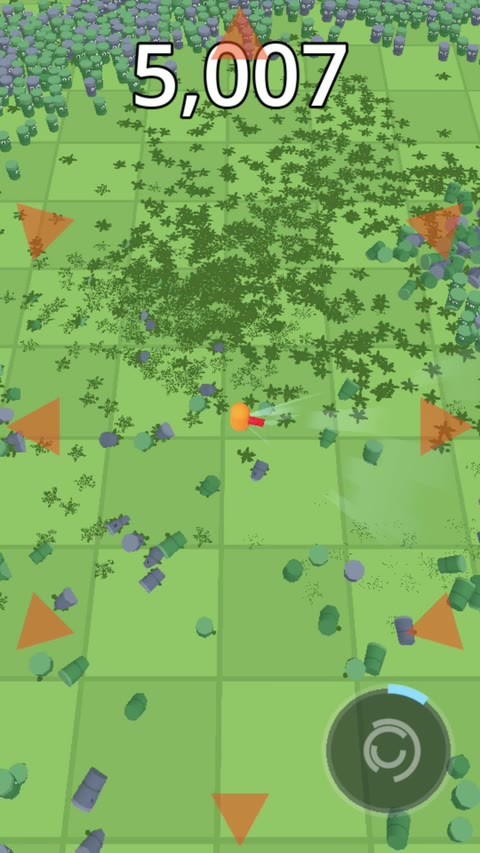
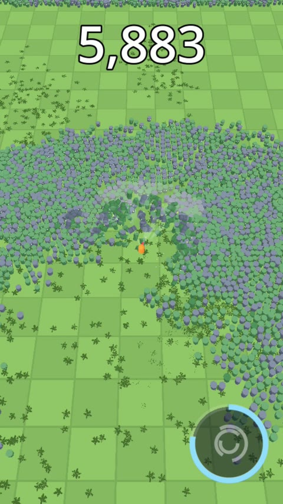

After devlog #01 the crowd tech worked, so the next goal was the game itself: one level of about two minutes, with no menus and no meta, that is fun on its own. The plan followed the design doc. The level would ramp up the enemy count along a curve, with a breather in the middle and a 10,000-strong mega-wave at the end.
A LEVEL THAT RAMPS UP
The first version was a horde director that read a curve of target enemy counts over time and kept topping the crowd up from the edges of the screen. Fifty trash cans walk in, the horde passes 2,000 at 0:45, thins out for a breather, climbs again, and hits 10,000 at 1:30. A timer said Survive, and a result screen counted what you smashed. On paper it was exactly the curve from the design doc.
Then I played it. Twice. The first run I lost at 1:34. The second run I won, with 2,915 kills. When I looked at why, the answer was embarrassing: I had been running away the whole time.
MEASURING THREE PLAY STYLES
One playtest is an anecdote, so I added automatic drivers to the game: one that stands still and lets the horde come, one that circles, and one that just runs screen-down with a little weave. Same level, same seed, same damage.
| Level 0, first version | Result |
|---|---|
| Running away | won, 100 HP, 5 kills |
| Standing and fighting | dead at 0:19, 188 kills |
Running away was a perfect strategy. The player moves at 5.5 m/s and the cans at 3.4, and nothing spawned behind the player, so you can outrun the entire horde forever. Standing still was suicide: the leaf blower is a cone of ±30°, and the cans came from three sides at once. The play style the game is actually about, fighting at the edge of the horde, had no reward at all. A goal called Survive made it worse: it rewarded not playing.
TWO THINGS THAT DIDN'T WORK
Making running harder. I sped the cans up and made some of them spawn ahead of the player. Running stopped working, but so did everything else: every driver died, and so did I. The level was now impossible instead of boring.
Making the blower deadlier. I tried letting knocked-back cans damage whatever they slam into, so blowing cans into the horde would cause chain kills. It changed nothing, not in any driver's numbers. It turned out that in a packed crowd the blower kills cans in place, because the crowd behind them stops them from flying, so fast collisions almost never happen.
Both tries treated the symptom. The problem was the growing blob itself. A crowd that keeps getting bigger and comes from everywhere at once leaves a cone weapon only one answer: run.
WAVES WITH ATTACK PATTERNS
So the horde now comes in waves. Each wave enters from one side in a formation, marches for a while so its shape stays readable, and only then starts hunting the player. A red-orange arrow at the edge of the screen warns about a second before it enters. Each pattern asks for a different answer:
| Pattern | What the player does |
|---|---|
| Column: a narrow river from one side | Turn and blow down the column |
| Wall: a wide line marching in | Find a gap or punch through the middle |
| Pincer: two columns from opposite sides | Pick a side and keep moving |
| Swarm: a dense cluster that hunts at once | Knock it back before it arrives |
| Ring: a circle closing in from every side | Break out through the thin part, or use the big move |
A level is now a list of 18 waves on a timeline. The intensity curve comes from wave sizes and the gaps between them, and the gaps are real breathers. Random sides come from the level seed, so a run is the same for everyone, which a daily challenge will need later. The goal changed from Survive to Smash 4,000: a player who runs away survives, but misses the target.


Measuring again showed the cone was still the bottleneck. With the blower covering ±45° and 9 m instead of ±30° and 8 m, the standing driver lasted 1:27 instead of 0:39, and the circling one reached the kill target. For the finale, the mega-wave hands the player a full big move, and recharges it every five seconds while the wave lasts.
Then I played it. I lost my first run at 1:04. The second survived but missed the target with 3,203 kills. The third won with 5,032. Every run was better than the last, which none of the earlier versions could say. On the phone, after a tuning pass, I won twice, with 8,827 and 7,554 kills, at a steady 60 fps with more than 8,000 cans on screen in the finale.
TWO SMALL BUGS WORTH TELLING
The big move charged three times slower than designed. The rule was simple: kills charge it, but never faster than once per 20 seconds. In practice it took about a minute. The cap was applied per simulation tick, but the leaf blower kills in 10 Hz pulses while the simulation ticks at 30 Hz, so two ticks out of three had no kills and charged nothing. Now kills are banked and drained at the capped rate, and 20 seconds means 20 seconds.
A 92 ms frame that wasn't the crowd. On the phone, two frames stood out: 89 ms and 92 ms. I added a log for every frame over 33 ms with a breakdown of where the time went. The simulation took 1–6 ms and the GPU 4–7 ms; the rest was somewhere else. The 89 ms frame came exactly when the kill counter first passed 1,000, and the 92 ms frame when the result screen first opened. It was the font. The first time a glyph appears at a new size, Godot rasterizes it, and on a phone that is slow: the comma in "1,000" at 96 pixels cost a frame and a half. The HUD now draws every character it will need once at startup, nearly transparent, and both hitches are gone.
The rule I'm keeping: when a level feels wrong, measure how each way of playing it actually does before tuning numbers. My first fix made the level impossible; the real fix changed the shape of the threat.
WHAT IS NEXT
The cans also got voices this week. Every few seconds one of them yells something universal, like "Wheee!" when it's flung, and a big wipe-out gets a group "Nooo!". Next is music that follows the director's intensity, then measuring audio latency on the phone. The first build is also ready for internal testing on Google Play. It's still a prototype in development, with no release date and nothing to download yet.
Short clips go up on TikTok, YouTube and Bluesky, and the longer story lands here.